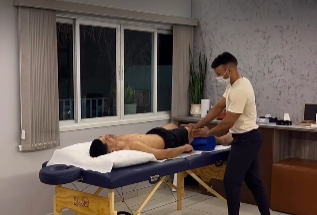

Diga adeus a dores, ansiedade e inseguranças
Muito mais que uma simples terapia, somos referência em saúde emocional e reprogramação mental na região. Sob a condução do especialista Jardeson Kelton, ajudamos você a retomar o controle da sua história.
📍 Avenida Vereador José Donato, 873 Jacaré - 13315-000 - Cabreúva/SP
Agendar agora!
★★★★★
"Sentia fortes bloqueios por conta de traumas do passado. O atendimento humanizado me trouxe alívio desde as primeiras semanas."

★★★★★
"Eu vivia refém de crises de ansiedade que me travavam no trabalho. Com o suporte do terapeuta Jardeson, hoje sinto que voltei a respirar em paz."